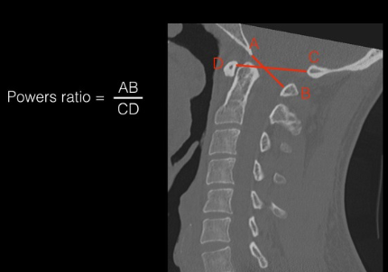

Adapted from: Knipe H, Atlantodental interval. Radiopaedia.org (Accessed on 17 Dec 2025). https://doi.org/10.53347/rID-38418
1) Description of Measurement
Power’s ratio is a geometric index designed to identify anterior atlanto-occipital dislocation. It evaluates relative motion between the skull base and the atlas.
2) Instructions to Measure
3) Normal vs. Pathologic Ranges
4) Important References
Powers B, Miller MD, Kramer RS, Martinez S, Gehweiler Jr JA. Traumatic anterior atlanto-occipital dislocation. Neurosurgery. 1979 Jan 1;4(1):12-7.
Bono CM, Vaccaro AR, Fehlings M, et al. Measurement techniques for upper cervical spine injuries: consensus statement of the spine trauma study group. Spine. 2007;32:593-600.
Rojas CA, Bertozzi JC, Martinez CR, Whitlow J. Reassessment of the craniocervical junction: normal values on CT. AJNR Am J Neuroradiol. 2007;28(9):1819-1823. doi:10.3174/ajnr.A0660
Kasliwal MK, Fontes RB, Traynelis VC. Occipitocervical dissociation-incidence, evaluation, and treatment. Curr Rev Musculoskelet Med. 2016;9(3):247-254. doi:10.1007/s12178-016-9347-6
5) Other info....
A normal Powers Ratio doesn't exclude AOD, as it's specific for anterior dislocation but a poor screening for general craniocervical instability.